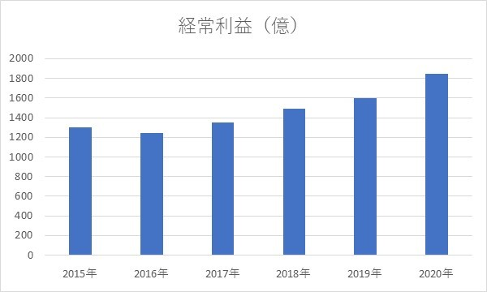
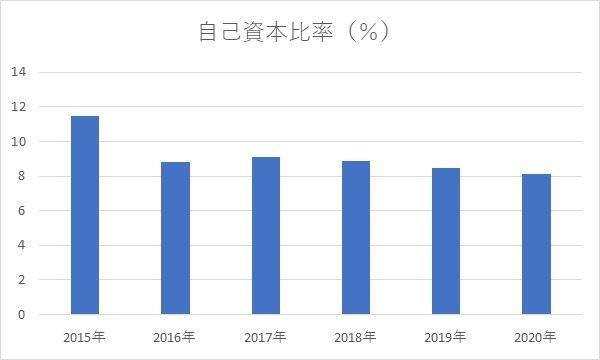
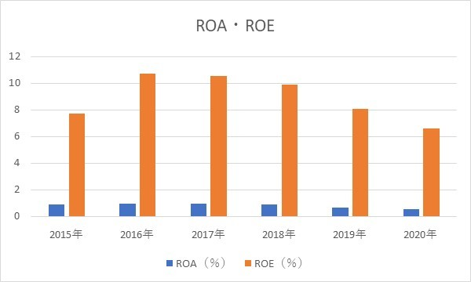
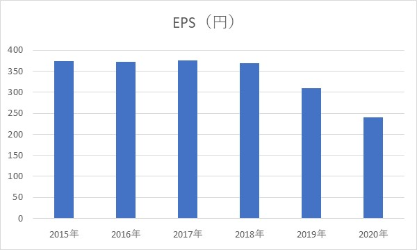

あおぞら銀行・配当、分析
2020/6/4
参照：https://www.aozorabank.co.jp/recruit/graduate/index.html
あおぞら銀行への投資はありなのか？？
長期保有目的での投資を考えている人におすすめです。
ぜひ、参考にしてください。
目次
- 1 あおぞら銀行とは
- 2 経常利益
- 3 自己資本比率
- 4 ROA・ROE
- 5 EPS
- 6 配当
- 7 PBR・PER
- 8 まとめ
あおぞら銀行とは？
あおぞら銀行は、ほかの銀行に比べて従業員数が少ないため、規模としては一歩劣ると考えられます。（少数精鋭ともいえる）
実際に、銀行業の中での売上高は18位なので、高いとは言えません。（銀行業売上高ランキング）
シニア層にフォーカスした資産運用コンサルティングといったユニークさや 事業再生関連投資・融資などの専門性を特徴としている。 （詳しくは、こちら）
経常利益
単位が大きいので、正確な数字だと...
- 2015年：1300億円
- 2016年：1240億円
- 2017年：1347億円
- 2018年：1488億円
- 2019年：1601億円
- 2020年：1844億円
経常利益は年々上昇しているので、業績は好調だといえます。
ただ、超大手と比べると利益は少ないように思えますが、少子高齢化の拡大が懸念される中で
シニア層にターゲッティングしているのは、利益アップの好材料となるかもしれませんね。
2020年から2022年にかけて中期経営改革を行っていくそうなので、 ここ3年には注目したいです。（詳しくは、こちら）
自己資本比率

自己資本比率では、銀行業においては預金を運用しているため低くなりがちなので、
国際では8％、国内では4％が基準となります。もし、4％を切っていれば非常に危険な銀行といわれています。
あおぞら銀行は8％ほどあるので、倒産や預金を返せなくなるという心配はないでしょう。
実際に、自己資本比率に関していえば、銀行業の中で6番目に優秀です。（銀行業自己資本比率ランキング）
ROA・ROE

ROEについては、銀行業の平均値が低いことを考慮すると非常に優秀です。
実際に、銀行業では2番目に優秀です。（銀行業ROEランキング）
株主にとっては投資価値があるといえますね。
ROAについては、お金を借りてそれを増やしていくことがビジネスなので、銀行業の平均値は低いです。
あおぞら銀行については、ROAでも数値は高いですが、負債が多いとも考えられるかと...
しかし、自己資本比率も高いので、負債が積み重なっているわけではないでしょう。
しかし、最近に関していえば、ROA,ROEのどちらも徐々に下がってきていることがわかります。 利益は上昇しているので、以前ほどの利益効率を生み出せていないのかもしれません。
EPS

2019年から減少しているため、投資価値も落ちているといえます。
これまでの指標から分かるように、利益は上昇しているが資産に対する利益率は下がっているので、
これらを踏まえての中期経営計画なのだろうと考えられます。
逆に言えば、利益率が改善されれば、超優良企業に近づくだろうと思われます。
配当
配当金に関しては、2019，20年には減配しているので、利益率が減ったことにより財務状況が悪化したことが原因でしょう。 今後の業績次第でさらに下がる可能性もあるかなと考えられます。
配当利回りは2020.6/4時点で7.76％と平均の2.16％より遥かに高いことがわかります。（日本取引所グループ） 現時点でも、配当金はとてもおいしいですね。
配当性向に関しては、資産に対しての利益効率が悪化しているにもかかわらず配当の割合が高いので、
配当金のさらなる減少はありそうです。
株主としては、配当性向が高いので事業への投資にいくらかは回してほしいと思いますが...
PBR・PER
- PBR：0.55
- PER：8.23
どちらも2020.6/4時点での指標となっていますが、目安はPBR：1、PER：15 とされているが、
PBRに関しては、銀行業は預金という負債の割合が多いので、あまり参考になりません。
PERは15倍に全然届いていないので、割安ですが、大手と比べると知名度はそんなに高くないので、期待値が低いともいえるかもしれません。
まとめ
あおぞら銀行は株価が割安で配当金が高いので、配当利回りが非常に良い銘柄といえます。（新型コロナウイルスの影響も現時点の株価が割安の要因です）
また、財務状況も銀行業の中では優秀なので、廃業する心配は必要ないでしょう。
不安要素としては、最近の利益効率が悪化しているため、配当金の減少が十分にあり得るということです。
とはいえ、当分の配当利回りは良いでしょうから、業績を見つつ株を保有していてもいいと思います。